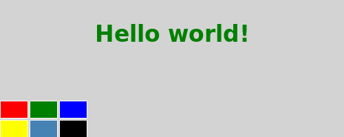

QML Tutorial 2 - QML Components
This chapter adds a color picker to change the color of the text.

Our color picker is made of six cells with different colors. To avoid writing the same code multiple times for each cell, we create a new Cell component. A component provides a way of defining a new type that we can re-use in other QML files. A QML component is like a black-box and interacts with the outside world through properties, signals and functions and is generally defined in its own QML file. (For more details, see Defining New Components). The component's filename must always start with a capital letter.
Here is the QML code for Cell.qml:
Walkthrough
The Cell Component
The root element of our component is an Item with the id container. An Item is the most basic visual element in QML and is often used as a container for other elements.
We declare a cellColor property. This property is accessible from outside our component, this allows us to instantiate the cells with different colors. This property is just an alias to an existing property - the color of the rectangle that compose the cell (see Property Binding in QML).
We want our component to also have a signal that we call clicked with a cellColor parameter of type color. We will use this signal to change the color of the text in the main QML file later.
Our cell component is basically a colored rectangle with the id rectangle.
The anchors.fill property is a convenient way to set the size of an element. In this case the rectangle will have the same size as its parent (see Anchor-Based Layout).
In order to change the color of the text when clicking on a cell, we create a MouseArea element with the same size as its parent.
A MouseArea defines a signal called clicked. When this signal is triggered we want to emit our own clicked signal with the color as parameter.
The main QML file
In our main QML file, we use our Cell component to create the color picker:
We create the color picker by putting 6 cells with different colors in a grid.
When the clicked signal of our cell is triggered, we want to set the color of the text to the cellColor passed as a parameter. We can react to any signal of our component through a property of the name 'onSignalName' (see Signal Attributes).